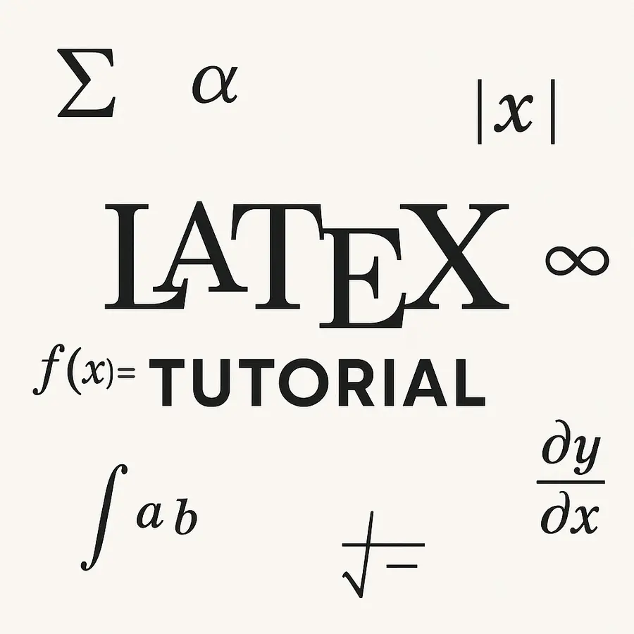
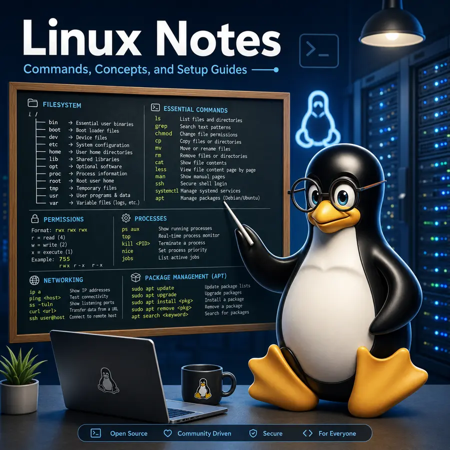
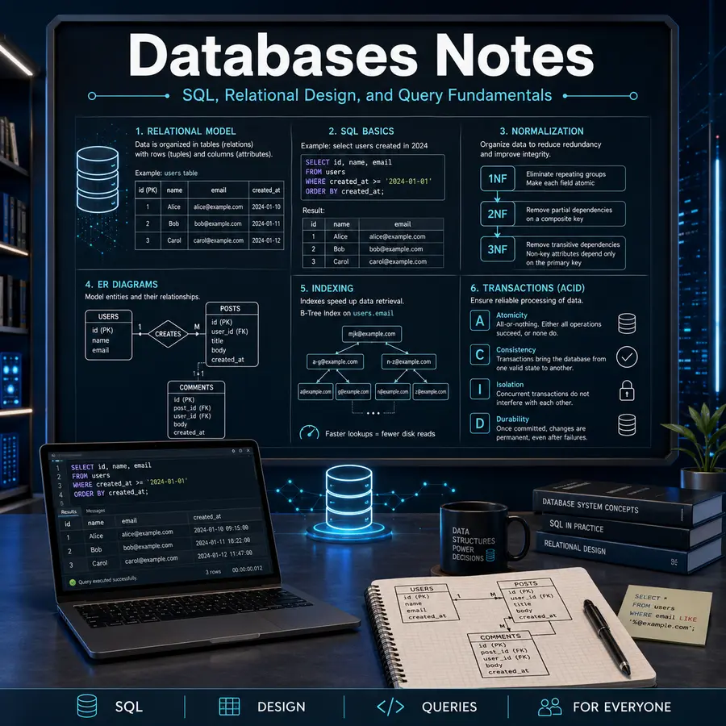
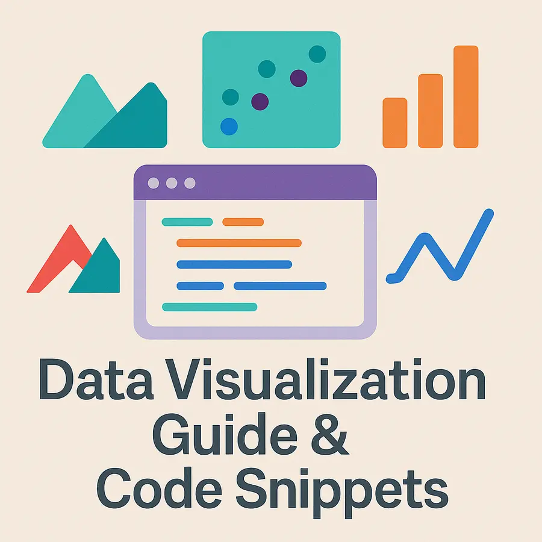
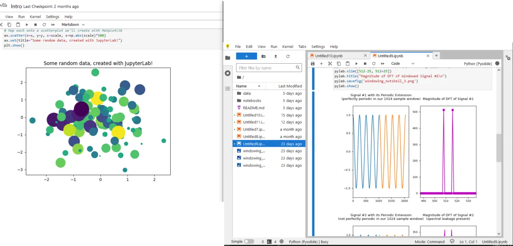
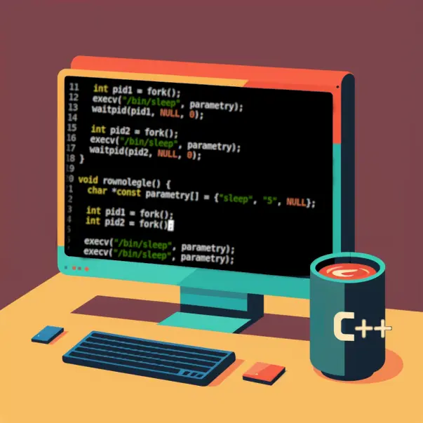

TypesettingLaTeX
LaTeX Tutorial
From document structure and mathematics to references, figures, tables, and production-quality technical documents.
Software architectureBackend
Backend Engineer's Guide
A broad, practical curriculum spanning API design, databases, networking, security, caching, distributed systems, and deployment.
Systems programmingC · Linux
Linux System Programming
Hands-on examples for processes, memory, signals, files, IPC, threads, and the operating-system interfaces beneath applications.

Operating systemsLinux
Linux Notes
A 93-star reference that moves from daily command-line use to administration, networking, permissions, scripting, and internals.

Data systemsSQL · Databases
Database Notes
Transactions, indexes, isolation, replication, warehousing, query design, and the failure modes that matter in production.

Visual communicationData visualization
Data Visualization
Bite-sized examples across visualization libraries, paired with principles for choosing encodings and communicating data honestly.

Polish curriculumPython
Kurs Podstaw Pythona
A progressive Polish-language Python course with explanations, examples, exercises, and browser-based practice.

Polish curriculumC · C++
Od C do C++
A practical bridge from procedural C to modern C++ concepts, the standard library, object orientation, and reusable abstractions.
Computer scienceC++ · Python
Algorithms & Data Structures
More than one hundred explained implementations organized by concept, language, and problem-solving pattern.
Web developmentHTML · CSS · JavaScript
Frontend Notes
A 50-star field guide to layout, browser APIs, interaction, component thinking, accessibility, and frontend performance.